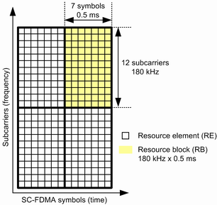
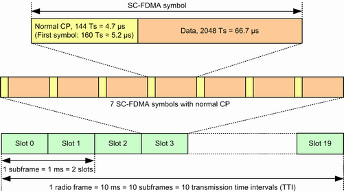
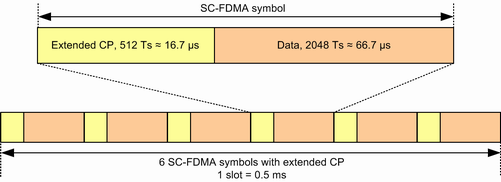

The UL radio resources in an LTE system are divided into time-frequency units called resource elements. In the time domain, a resource element corresponds to one SC-FDMA symbol. In the frequency domain, it corresponds to one subcarrier.
For the mapping of physical channels to resources, the resource elements are grouped into resource blocks (RB). Each RB consists of 12 consecutive subcarriers (180 kHz) and 6 or 7 consecutive SC-FDMA symbols (0.5 ms).

In the time domain, the additional units radio frame, subframe and slot (containing the SC-FDMA symbols) are defined, see figures below. Each SC-FDMA symbol contains a guard time called cyclic prefix (CP). Depending on the duration of the guard time, it is either called normal CP or extended CP. A slot contains either seven SC-FDMA symbols with normal CP or six SC-FDMA symbols with extended CP.
The basic time unit in LTE is the sample interval Ts. Ts can be calculated from the sampling frequency 30.72 MHz: 1 Ts = 1/30.72 MHz ≈ 32.55 ns.


The figures above are for FDD, but the shown structure of SC-FDMA symbols and UL slots applies also to TDD.